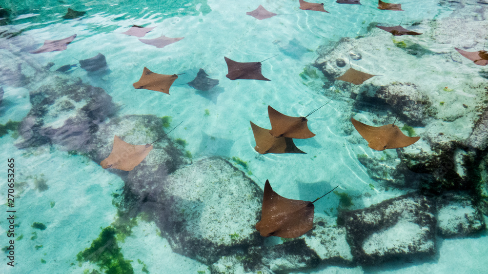

A INFOTRAVEL oferece os melhores pacotes para as Bahamas! Confira as opções e compre sua viagem!
Conhecendo o paraíso caribenho
As Bahamas possuem praias que fazem você se sentir em um verdadeiro paraíso. O arquipélago formado por 700 ilhas e aproximadamente 2,5 mil ilhotas distribuídas entre o Oceano Atlântico e o Mar do Caribe fica a cerca de uma hora de voo de Miami (EUA). O tom azul e cristalino da água é fruto da proximidade com a terceira maior barreira de corais do planeta, ficando atrás apenas dos recifes da Austrália e do Belize. Junte a isso clima tropical, gastronomia deliciosa e roteiros culturais.
O que fazer em Bahamas
Além de mergulhar e surfar nas praias paradisíacas das ilhas, reserve um tempinho para conhecer belezas de Nassau, a capital do país, assim como a ilha Grand Bahama e o arquipélago Exuma, além de conhecer a Escadaria da Rainha e o Pirates of Nassau Museum, com as verdadeiras histórias de piratas. Outra atração obrigatória é nadar com os golfinhos. Garanta agora seu pacote para Bahamas!
Compras em Bahamas
Ao sair para as compras nas Bahamas, você encontrará uma ampla oferta de lojas, que vão desde marcas de grife, como Cole’s e Gucci, até locais inteiramente dedicados ao artesanato local, com produtos mais baratos e excelentes opções para lembrancinhas de viagem. Adquira agora sua passagem para Bahamas e aproveite!

Ainda tem tempo!! Adquira já seu pacote de férias conosco e comece seu 2024 bem nas Bahamas
1. Explore sem Limites:
Não importa o destino dos seus sonhos, aceitamos todos os cartões de crédito para garantir que você tenha a liberdade de explorar o mundo sem limitações. Seja para uma escapada romântica, uma jornada de aventura ou um retiro tranquilo, estamos aqui para atender a todos os seus desejos de viagem.
2. Facilidade e Rapidez:
Na INFOTRAVEL, acreditamos que planejar sua viagem deve ser tão emocionante quanto a viagem em si. Com a aceitação de todos os cartões de crédito, oferecemos um processo de reserva fácil e rápido. Basta escolher seu destino, selecionar suas datas e pagar com o cartão de crédito de sua escolha para iniciar sua jornada.
3. Flexibilidade de Pagamento:
Compreendemos que cada viajante tem seu próprio ritmo financeiro. Ao aceitar todos os cartões de crédito, oferecemos a flexibilidade de escolher opções de pagamento que se ajustem ao seu orçamento. Parcelamento, pontos de recompensa e benefícios exclusivos esperam por você quando você reserva conosco.
4. Segurança e Tranquilidade:
Sua segurança é nossa prioridade. Ao aceitar todos os cartões de crédito, garantimos transações seguras e protegidas, permitindo que você desfrute da antecipação da viagem sem preocupações financeiras. Além disso, estamos aqui para oferecer suporte em todas as etapas da sua jornada.
5. Experiências Personalizadas:
Na INFOTRAVEL, entendemos que cada viagem é única. Com a aceitação de todos os cartões de crédito, podemos personalizar suas experiências, proporcionando momentos memoráveis que atendam às suas expectativas e desejos específicos.
Estamos ansiosos para ajudá-lo a criar memórias duradouras em destinos incríveis. Reserve sua próxima aventura conosco e descubra o mundo com a facilidade e a conveniência que só a INFOTRAVEL pode oferecer. Viaje conosco, onde cada jornada é uma promessa cumprida.